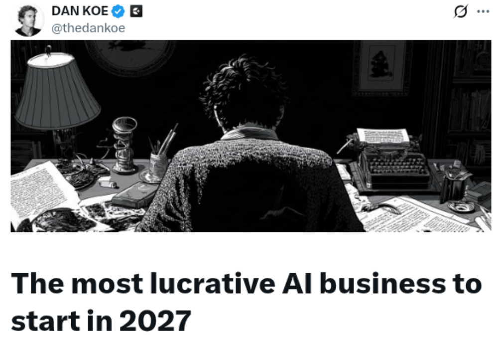
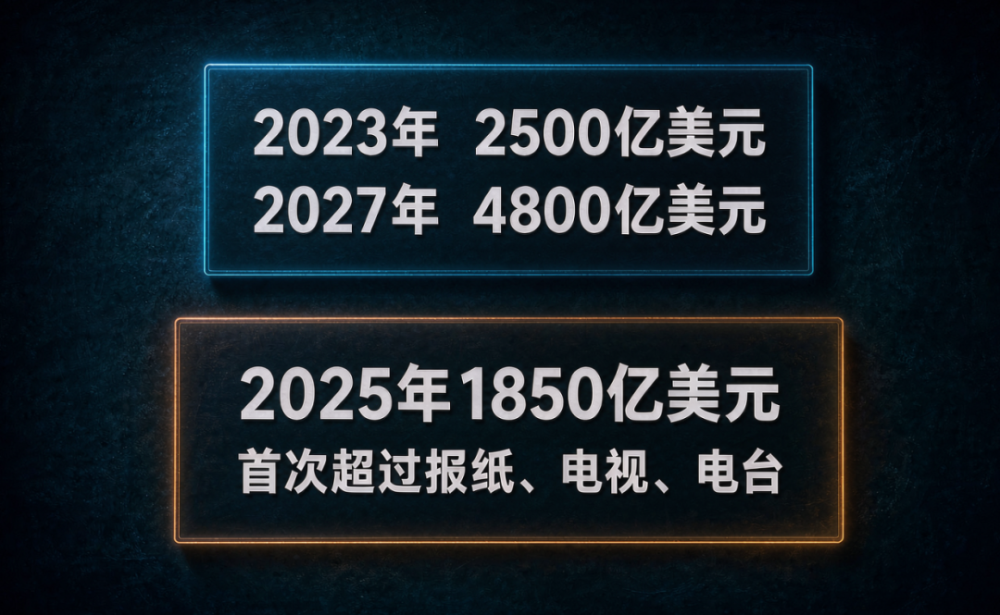
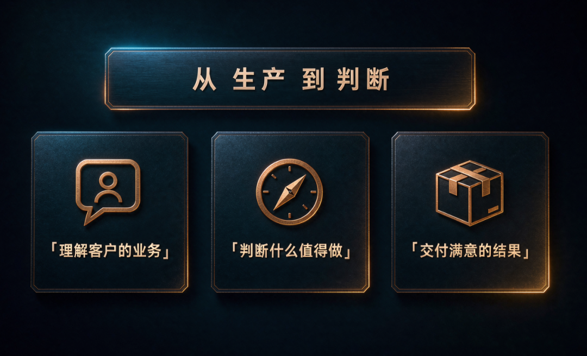
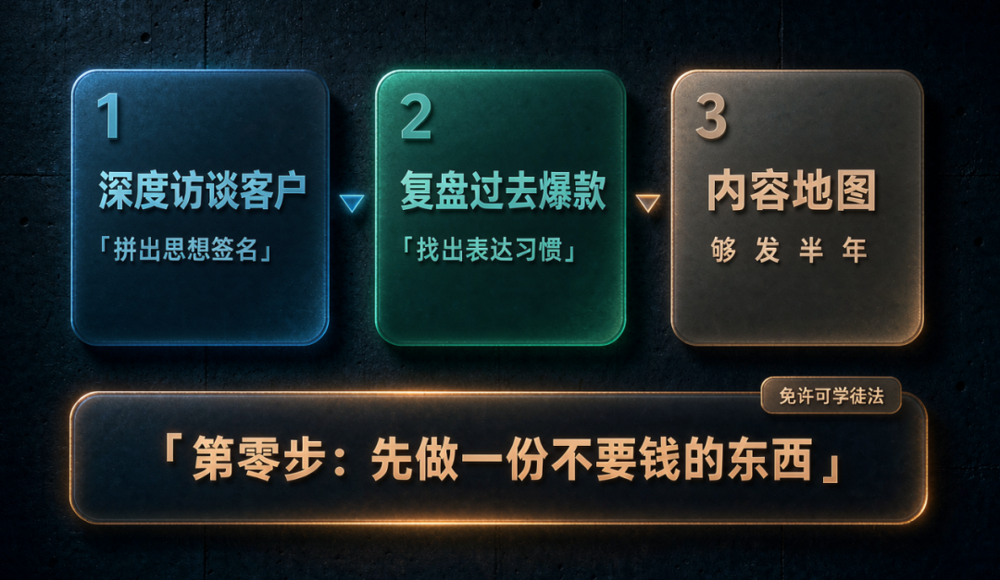

大家好，我是talk君。
今年 1 月，一个 1996 年出生的美国人，在 X 上发了一篇长文，题目叫《如何在一天之内重整你的人生》。到现在，这篇东西在 X 上的曝光量是 2.5 亿。
之后中文这边就接上了，有人做中英对照，有人写万字精读，还有人打卡三十天。他也就被叫成了「一人公司教父」。

他叫 Dan Koe。11 月初，他又发了一篇长文，题目叫《2027 年最赚钱的 AI 生意》。这篇的结论很直接：最赚钱的不是做个 AI 产品卖给一千万人，是做一个人的创意团队，服务一到三个客户。
和你有什么关系
你大概会说，我又不创业，这跟我有什么关系。
那我换个问法。你有没有过这样一个念头：如果这份工作哪天没了，我能靠什么挣钱。这个念头出现的频率，这两年是不是变高了。
Dan Koe 这篇文章之所以能传开，不是因为他的建议有多高明。是因为他接住的，正是这个念头。
1
先把他的结论摆出来
他给的方案，可以写成一行字：一个人，一套 AI 工具，一到三个客户。
收入数字是这样的。如果做得足够好，一个月收一万到七万五千美元，不算天方夜谭。但他自己也把话按住了：前提是你真的擅长这件事，而且肯练，别把它当成又一条一夜暴富的路子。
这里要说一句实话。七万五是天花板，不是平均值。另一篇拆解他文章的中文报道里提到，第一个客户能收两千五到五千美元一个月，就已经算现实了。
他服务的对象是谁？是那些有真实业务、但没精力做内容的老板和创始人。这些人要么在管团队，要么在经营公司，每天的时间被切成碎片。大部分创始人发出来的东西，翻来覆去就是在发通知。至于在网上立住影响力到底靠什么，他们其实没概念。
他给这个角色起了个名字，首席创意官。
2
这个一人创意团队，要干三个人的活
他把过去一个内容团队的工作，拆成了三个角色。
第一个是品牌策略师。这个角色管的是「别人怎么认识你」。他会第一个站出来拦你：别每条都追热点，别每条都想着爆。流量和互动当然要，代价不能是拿信任去换。
第二个是内容策略师。这个角色管的是「下一条发什么」。他得摸清楚一个话题里什么东西容易火，封面的构图、标题怎么搭、完播率和传播的规律，都得心里有数。
第三个是写手兼运营。这个角色负责把东西做出来。推文、视频脚本、长文、邮件，什么都得写，写完了排期，再一条条发出去。
Dan Koe 说了一句挺扎人的话。绝大多数人拿 AI 折腾半天，什么也没攒下来，原因是他们只把 AI 当成了一支笔。他们不管品牌定位，也不管内容规划，想到什么就发什么，发完蹲在那儿等它爆。
而这三件事里，AI 最擅长的是第三件，第二件也能帮上忙，第一件几乎替代不了。
3
为什么偏偏是现在
他给这篇文章垫了两组数字。一组来自高盛：创作者经济 2023 年是两千五百亿美元，预计 2027 年涨到四千八百亿美元，差不多翻一倍。

另一组更值得看：2025 年，创作者从广告里分到约 1850 亿美元，第一次把报纸、电视、电台加起来甩在身后。
钱的流向变了，技能的价格才会跟着变。这就是他把「会抓注意力」称为当下最值钱技能的依据。
顺着这个逻辑，他讲了几个现象。有个做社群产品的大网红，一个月掏一百多万美元请人做内容推广；美国品牌在 2021 年给创作者花了一百三十九亿美元，机构预计 2026 年会到四百三十九亿美元，五年涨了三倍。一条六十秒的口播，报价能到几千美元，九成还没效果。
这些钱投的不是「内容好不好」，是「有多少人看」。
4
AI 压平的是什么，没压平的是什么
这一段，是全篇真正立得住的地方。
AI 把执行层的成本压平了。写文案、出图、剪视频，过去得有人、有时间、还得花钱，现在一台电脑，一个人，全办了。
但有三件事，AI 做不了：理解客户的业务、判断什么值得做、交付一个能让客户满意的结果。
这三件事不在任何数据库里。它们长在一个人身上：他走过的路，他下过的判断，他手上那点摸出来的准头。

所以这里有个很关键的推论：真正被压平的，不是竞争，是靠人多、靠预算多、靠流程长撑起来的壁垒。以前你要进这行，得先组个团队；现在你可以一个人接第一单。
Dan Koe 的原话更狠一点：AI 没有消灭这份工作，它改变了这份工作的形状，从「生产」变成了「判断」。有个做内容代理的人跟他说，以前一天干 12 个小时，现在只干 4 个小时，一天到晚只做两件事：看稿，动刀。
5
他给的那条路，第一步很小
文章里最实用的一段，是他给的操作流程，分三步。
第一步，深度访谈客户。问一堆问题：你帮谁，你的故事是什么，谁影响过你，你平时聊什么话题，你信什么、反对什么，你想把受众带到哪儿去。这些问题拼起来，就是这个人独有的「思想签名」。
第二步，把他过去的爆款扒一遍，找出他的表达习惯，和他为什么受欢迎。
第三步，做一张带数据的内容地图。定几个大方向，每个方向拆出话题，每个话题再拆出具体帖子和切入角度，够发半年。

但这三步之前还有一步，也是真正卡人的那一步：你敢不敢先动手，做一份不要钱的东西给人看。
Dan Koe 讲了一件真事。他的朋友 JK Molina 有一天直接帮他写了十条帖子发过来，说你先试试，好用我接着写。Dan Koe 把这一招叫「免许可学徒法」。他的建议是，每天发十条私信，把作品直接递过去，一个月内很难一个客户都签不到。
这套方法的门槛不是技术。是脸皮，是你愿不愿意在没有报酬、也没有承诺的前提下，先把手艺亮出来。
6
但有几件事，他没告诉你
Dan Koe 在 Instagram 上有 170 万粉丝，邮件列表几十万人订阅，他自己有产品，也开课。这篇长文的最末，挂的就是他那场 49 美元的写作课。而这，已经是他今年写的第 27 篇文章。
也就是说，他讲的这条路，他自己是从「已经有一大群受众」这个起点出发跑通的。而看这篇文章的人，多数人的起点是零。
他讲的方向没错，但他的收入数字不能当成你的预期。他的路径里有很大一段，是靠五年、八十多万字换来的。
还有一层批评，来自科技媒体。有篇文章直接把他叫做「末世圣徒」，说他批了五年成功学，转过身，自己坐上了这个行当的头几把交椅。这个批评未必全对，但它提醒得对：一个精准接住时代情绪的人，和一个给出行之有效的方法的人，是两回事。
所以我们得把两样东西分开。他给的数字，要打折看。他给的方向，可以认真听。
写在最后
回到那个念头：如果工作越来越不稳，我靠什么挣钱。
Dan Koe 的回答不是「你该去创业」。他的回答更像一句实话：与其焦虑自己会不会被 AI 替代，不如用 AI 帮一个需要你能力的人，把一件事做成。
然后收到第一笔钱。
他说，收到钱的那一刻，焦虑会往后退一步。我信这句话。因为焦虑的解药从来不是想清楚，是做成过。
关注一刻talks。我是 talk君，我不预测这条路有多少人能走通。我只帮你看清楚，那个把执行成本压平的，到底是不是 AI。
本文章谨为商业研判，不构成任何投资建议